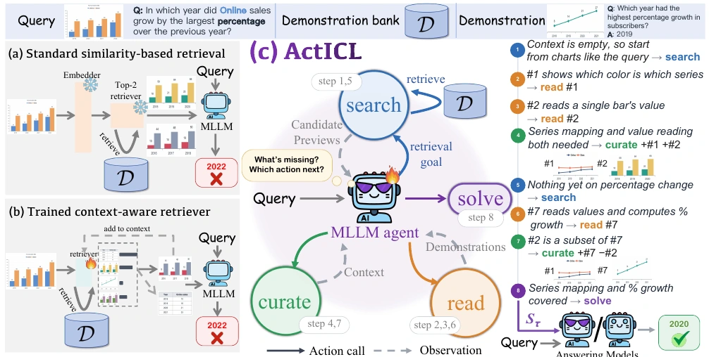
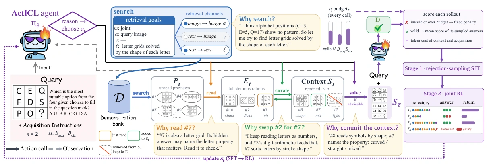

search
Formulate a retrieval goal. Receive compact candidate previews through visual, textual, or joint retrieval.
Candidate previewsLearn what to retrieve. Decide what to keep.
1 University of Texas at Austin2 Rutgers University
over similarity-based retrieval
over the strongest prior baseline
benchmarks × model backbones
Average gains in the adaptive setting, compared with 4-shot MMICES and ProMSA, respectively.
Follow an agent as it finds a missing skill,
revises its examples, and gets ready to answer.
Find the largest percentage increase over the previous year.
A similar-looking chart is a start. Which examples will teach the skills this question needs?
Which color is online?
CandidateHow tall is one bar?
CandidateRead values. Compare change.
Not retrieved yetIllustrative reconstruction of the chart example in Figure 1, using simplified chart values. This walkthrough is not a live model run or a measured prediction.
01 / The question
Multimodal in-context learning depends on its demonstrations. Visual similarity alone can return examples that repeat the same skill—or miss the one the query needs.
ActICL learns to acquire and use the context. The agent reasons about its information gaps, searches with targeted goals, inspects candidates, and revises its examples before answering.
Each demonstration is scored independently of the context being built.
Each decision responds to what the agent has already learned.

02 / The method
The agent decides what to search for, what to inspect, what to retain, and when the context is ready.
Formulate a retrieval goal. Receive compact candidate previews through visual, textual, or joint retrieval.
Candidate previewsInspect a promising candidate. Reveal its complete input–output demonstration, including the target answer.
Full demonstrationsAdd useful demonstrations and remove redundant ones. Read examples remain available for later reuse.
A revised contextCommit a context that meets the request and budgets. Pass it to the same model or another answering model.
A context ready to useTwo stages of post-training jointly improve
context construction and context use.
Rejection sampling retains valid, budget-compliant acquisitions with correct answers. Supervision covers both the tool-use trajectory and its answer.
Acquisition learns from answer quality minus resource costs. Answering learns to use the acquired context, with separate advantages and shared parameters.

03 / The evidence
Explore results across seven benchmarks.
Compare fixed 4-shot and adaptive acquisition.
| Method | TextVQA | MME-R | CharXiv | GVL | MathVision | MDK12 | VL-ICL | Avg. |
|---|
Scores are shown as percentages from Table 1; gains are percentage points (pp). Fixed 4-shot controls demonstration count, not total inference cost. Adaptive ActICL uses 3.54 demonstrations on average across the main experiments.
Beyond the trained backbone
ActICL’s Qwen3.5-9B agent can supply demonstrations to a separate answering model. In this experiment, the answering models stay fixed.
on GPT-5.6-Sol over MMICES
Three-benchmark average · 4-shot
| Context builder | Perception Bench | MindCube | MMMU-Pro |
|---|
ContextNav uses Gemini3.5-Flash as its policy; ActICL uses Qwen3.5-9B. Model names follow the paper.
04 / What makes it work
Ablations separate the value of the training stages
and the decisions inside the acquisition loop.
Qwen3.5-9B, adaptive setting. Average score on MME-R, CharXiv, and MathVision. Bars use a shared 0–100 scale.
Replacing the agent’s retrieval goals with a fixed query-based goal reduces the average score.
With externally supplied contexts, ActICL outperforms LoRA on average across the evaluated ICL and interleaved image–text settings.
05 / Citation
@misc{li2026acticl,
title = {ActICL: Post-Training for Agentic Multimodal
In-Context Learning},
author = {Li, Yanshu and Tang, Ruixiang and
Li, Junyi Jessy and Stengel-Eskin, Elias},
year = {2026},
note = {Preprint}
}